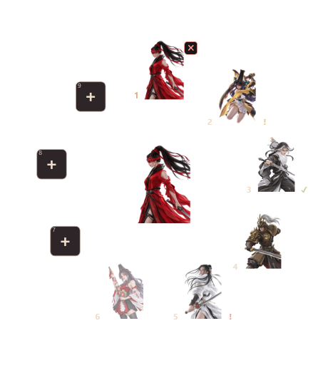
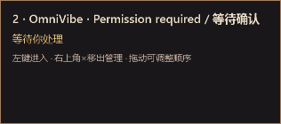
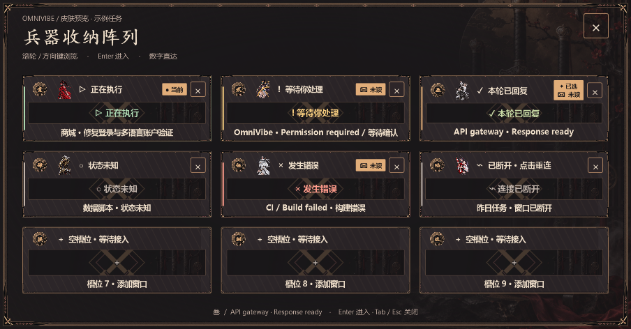
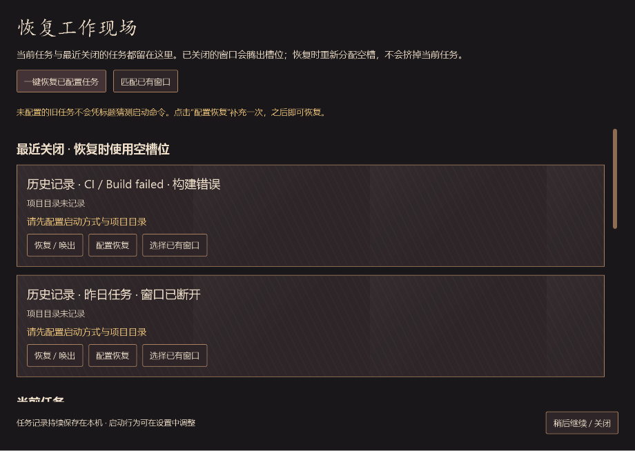

排列时保留悬浮入口；空槽点击「＋」添加；任务悬停立即显示详情，并可点击「×」移出管理。

已绑定任务显示原有外观；空槽显示加号。已有任务悬停后出现×，移出后终端仍运行。

提示不等待系统悬停计时，不抢终端键盘焦点。鼠标移动到另一编号时直接切换内容。
展开：悬停或点击入口。
收起：离开整个操作范围约400毫秒。
隐藏：用户主动操作。
排列和恢复：入口保留。

点击任务进入窗口，点击卡片右上角×移出管理。空卡片直接添加。

最近关闭排在恢复页顶部，最多保留30条。保存项目、会话和配装；恢复时使用空槽，不替换正在使用的任务。